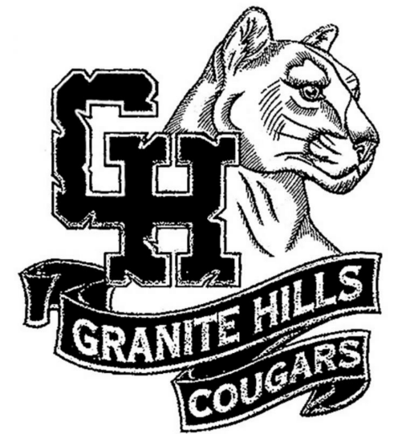

About me

I'm Mason Bodle, and I have an absolute passion for animals, especially birds and primates. Ever since I was a kid, I've been captivated by their fascinating behaviors and incredible diversity.
One of my favorite ways to connect with animals is through volunteering at bird shelters. It's such a rewarding experience to provide care and support for these birds. Whether it's feeding them, cleaning their enclosures, or simply spending time with them, I cherish every moment.
Aside from birds, I also have a deep admiration for primates. Their intelligence, social structures, and unique characteristics have always fascinated me. I love observing them in their natural habitats and learning about their complex lives.
In addition to my love for animals, I'm an avid scuba diver. Exploring the underwater world is a whole new adventure that I can't get enough of. I'm even rescue certified and working towards becoming a Scientific Diver. I hope to contribute to marine conservation efforts and raise awareness about the need to protect our oceans. I hope you enjoy my porfolio
My World 🌎

Toby - Costa Rica
August 2022

Random Bird - Free Flight Exotic Bird Sanctuary
May 2023
Donkey - Bonaire
July 2022
Jellyfish - Bonaire
July 2022
Work Experience
Customer Service Associate - CBU Recreation
- Helped up to 300 customers daily with a positive attitude and focus on customer satisfaction.
- Maintained customer satisfaction with forward-thinking strategies focused on addressing customer needs and resolving concerns.
- Maintained a clean personal appearance and resolved concerns with at least 50 customers to help with a good experience with the customer.
- Conduction of group tours of the gym.
Tennis Summer Camp Instructor - Laguna Niguel Raquet Club
- Worked with over 150 clients from ages 5-15, demonstrating basic tennis techniques.
- Coached over 30 pre-established tennis players in advanced game techniques and competition strategies.
- Participated in an organized off-season tennis camp for hundreds of children
CSU Learning Assistant - CSU Learning Assistant Program
- Collaborated with professor to enhance lecture effectiveness through active participation and engagement
- Facilitated and coordinated dynamic group study sessions, promoting collaborative problem-solving and knowledge sharing
- Delivered comprehensive group tutoring and personalized one-on-one instruction to support student learning and academic success
- Developed and implemented interactive and engaging activities to foster a stimulating learning environment
- Ensured the integrity of exams by administering and monitoring the testing process
Education
Bachelors Degree - Biology
California Baptist University - 4.0 GPA

High School Diploma
Granite Hills High School - 4.15 GPA
